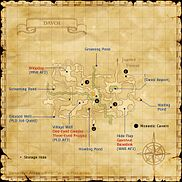

Description
Davoi is a dungeon in Norvallen.
Map

Involved in Quests / Missions
| Quest / Mission | Type | Starter | Location |
|---|---|---|---|
| A Knight's Test | Job: Paladin | Balasiel | Southern San d'Oria (F-7) |
| Beam Me Up... No, Not There! | General | Anastase | Ru'Lude Gardens (G-9) |
| Deal with Tenshodo | General | Garnev | Lower Jeuno (J-7) |
| Further Founts | General | Anastase | Ru'Lude Gardens (G-9) |
| Missionary Moblin | General | Koblakiq | Oldton Movalpolos (H-11) |
| Tea with a Tonberry? | General | Sobane | Southern San d'Oria (D-6) |
| Test My Mettle | General | Devean | Selbina (I-8) |
| The Crimson Trial | RDM AF 1 | Sharzalion | Southern San d'Oria (K-6) |
| The Doorman | WAR AF 1 | Phara | Bastok Mines (J-9) |
| The First Meeting | MNK AF 2 | Oggbi | Port Bastok (E-6) |
| The Miraculous Dale | General | Rakuru-Rakoru | Lower Jeuno (I-6) |
| To Cure a Cough | General | Amaura | Southern San d'Oria (G-6) |
| Under Oath | PLD AF 3 | Trion | Chateau d'Oraguille |
| Warding Vampires | General | Maloquedil | Northern San d'Oria (J-8) |
| Whence Blows the Wind | Genkai: 3 | Maat | Ru'Lude Gardens (Multiple) |
NPCs
| Name | Location | Type |
|---|---|---|
| Bernal | J-8 | — |
| Lootblox | J-7 | — |
| Quemaricond | H-7 | — |
| Sedal-Godjal | J-8 | — |
| Zantaviat | J-7 | — |
Notorious Monsters
| Name | Level | Drops | Steal | Family | Spawns | Notes |
|---|---|---|---|---|---|---|
| Blubbery Bulge | 45-47 | Slime Oil | — |  SlimesImage source SlimesImage source | — | A, H, Sc |
| Dirtyhanded Gochakzuk | 71 | Curse Wand | — |  OrcsImage source OrcsImage source | — | A, L, S |
| Hawkeyed Dnatbat | 26-28 | Archer's Knife Assassin's Bow | — | OrcsImage source | — | A, L, S |
| Poisonhand Gnadgad | 39-40 | Jujitsu Gi Jujitsu Sitabaki | — | OrcsImage source | — | A, L, S |
| Steelbiter Gudrud | 33-34 | Lizard Piercer Sentinel's Mantle | — | OrcsImage source | — | Assisted by Orc's Wyvern (26-28); A, L, S |
| Tigerbane Bakdak | 31-32 | Warrior's Axe Tigerhunter Scroll of Absorb-VIT Scroll of Absorb-AGI | — | OrcsImage source | — | A, L, S |
Regular Monsters


Event Monsters
| Name | Level | Drops | Steal | Family | Spawns | Notes |
|---|---|---|---|---|---|---|
| Barakbok | 43 | — | — | OrcsImage source | 1 | Spawned Quest: The Doorman; A, L, S |
| Bilopdop | 55 | — | — | OrcsImage source | 1 | Spawned Quest: The First Meeting; A, L, S |
| Deloknok | 53 | — | — | OrcsImage source | 1 | Spawned Quest: The First Meeting; A, L, S |
| Gavotvut | 45 | — | — | OrcsImage source | 1 | Spawned Quest: The Doorman; A, L, S |
| Hematic Cyst | 40 | — | — | SlimesImage source | 1 | Spawned Quest: Tea with a Tonberry?; A |
| One-eyed Gwajboj | 62 | — | — | OrcsImage source | 1 | Spawned Quest: Under Oath; A, L, S |
| Purpleflash Brukdok | 45 | Davoi Storage Key | — | OrcsImage source | 1 | Spawned Quest: The Crimson Trial; A, L, S |
| Three-eyed Prozpuz | 60 | — | — | OrcsImage source | 1 | Spawned Quest: Under Oath; A, L, S |
Story walkthroughs in this area
| Story | Mission / quest |
|---|---|
| ToAU access | The Road to Aht Urhgan |
| WotG W-10 | Howl from the Heavens |
| ACP 2 | The Echo Awakens |
References
External references describe their own server or retail rules. Documented Zenith changes take precedence.
Map credits: Map 1 — HorizonXI Wiki. Original game maps © SQUARE ENIX; redrawn maps retain the credited authorship and license.

Additional level-75 reference


During the Great War nearly twenty years ago, an attack was made by the Orcish troops on this peaceful Elvaan monastery left the tiny sanctuary in ruins and under the control of the beastmen. The Orcs transformed the area into their main stronghold, delighted by the layout of the surrounding area, as well as the protection that the monastic caverns provided. While there have been many attempts by the San d'Orian Royal Knights to reclaim this area, the ever-weakening forces of the kingdom remain powerless in this fight and often rely on hired adventurers to assist them in their campaigns.
Connecting Areas
- Jugner Forest: J-6, Escape
- Monastic Cavern: G-7, H-8, H-11, J-9, K-7

Involved in Quests/Missions
| Quest | Type | Starter | Location |
|---|---|---|---|
| A Knight's Test | PLD Flag | Balasiel | Southern San d'Oria F-7 |
| Missionary Moblin | General | Koblakiq | Oldton Movalpolos H-11 |
| Tea with a Tonberry? | General | Sobane | Southern San d'Oria D-6 |
| Test My Mettle | General | Devean | Selbina I-8 |
| The Crimson Trial | RDM AF 1 | Sharzalion | Southern San d'Oria K-6 |
| The Doorman | WAR AF 1 | Phara | Bastok Mines J-9 |
| The First Meeting | MNK AF 2 | Oggbi | Port Bastok E-6 |
| To Cure a Cough | General | Amaura | Southern San d'Oria G-6 |
| Under Oath | PLD AF 3 | Trion | Chateau d'Oraguille |
| Warding Vampires | General | Maloquedil | Northern San d'Oria J-8 |
| Mission | Country | Starter | Location |
| Mission 2-2: The Davoi Report | San d'Oria | Gate Guard | San d'Oria |
| Mission 3-1: Infiltrate Davoi | San d'Oria | Gate Guard | San d'Oria |
| Mission 4: Magicite | All | Embassy | Ru'Lude Gardens |
| Mission 8-1: Vain | Windurst | Gate Guard | Windurst |
| Mission 8-2: The Jester Who'd Be King | Windurst | Gate Guard | Windurst |
Weather
Coffer/Chest Contents |
NPCs Found Here
Fishing
| |||||||||||||||||||||||||||||||||||||||||||||||||||||||||||||||||||||||||||||||||||||||||||||


Notorious Monsters Found Here
| Name | Level | Drops | Steal | Family | Spawns | Notes |
|---|---|---|---|---|---|---|
Barakbok (NM)
|
43 | Orc | 1 | A, L, S, Sc | ||
Bilopdop (NM)
|
55 | Orc | 1 | A, L, S, Sc | ||
| Blubbery Bulge (NM) | 45-47 | Slime | 1 | A, H, Sc | ||
Deloknok (NM)
|
53 | Orc | 1 | A, L, S, Sc | ||
| Dirtyhanded Gochakzuk (NM) | 71 | Orc | 1 | A, L, S, Sc | ||
Gavotvut (NM)
|
45 | Orc | 1 | A, L, S, Sc | ||
| Hawkeyed Dnatbat (NM) | 26-28 | Orc | 1 | A, L, S, Sc | ||
Hematic Cyst (NM)
|
40 | Clot | 1 | A | ||
One-eyed Gwajboj (NM)
|
62 | Orc | 1 | A, L, S, Sc | ||
Orc's Wyvern (NM)
|
26-28 | Wyvern | 1 | H | ||
| Poisonhand Gnadgad (NM) | 39-40 | Orc | 1 | A, L, S, Sc | ||
Purpleflash Brukdok (NM)
|
45 | Orc | 1 | A, L, S, Sc | ||
| Steelbiter Gudrud (NM) | 33-34 | Orc | 1 | A, L, S, Sc | ||
Three-eyed Prozpuz (NM)
|
60 | Orc | 1 | A, L, S, Sc | ||
| Tigerbane Bakdak (NM) | 31-32 |
|
Orc | 1 | A, L, S, Sc |
HP = Detects Low HP; M = Detects Magic; Sc = Follows by Scent; T(S) = True-sight; T(H) = True-hearing JA = Detects job abilities; WS = Detects weaponskills; Z(D) = Asleep in Daytime; Z(N) = Asleep at Nighttime |
Mobs Found Here
| Name | Level | Drops | Steal | Family | Spawns | Notes |
|---|---|---|---|---|---|---|
| Davoi Hornet | 20-23 | Bee | 17 | L, S, Sc | ||
| Davoi Mush | 33-36 | Slime | 3 | A, H, Sc | ||
| Davoi Pugil | 20-23 | Pugil | 27 | A, H | ||
| Davoi Wasp | 30-33 | Bee | 15 | A, L, S, Sc | ||
Ferocious Pugil
|
22-24 | Pugil | 1 | A, H | ||
| Geezard | 34-37 | Lizard | 17 | A, L, H | ||
Gloop
|
38-40 | Slime | 1 | A, H | ||
Greater Pugil
|
30-32 | Pugil | 1 | A, H | ||
| Morbol | 37-39 | Morbol | 3 | A, H | ||
Oil Spill
|
45-47 | Slime | 1 | A, H | ||
| Orcish Beastrider | 33-37 | Orc | 19 | A, L, S, Sc | ||
| Orcish Bowshooter | 42-46 | Orc | 26 | A, L, S, Sc | ||
| Orcish Brawler | 35-39 | Orc | 19 | A, L, S, Sc | ||
| Orcish Champion | 64-68 | Orc | 7 | A, L, S, Sc | ||
| Orcish Cursemaker | 23-27 | Orc | 10 | A, L, S, Sc | ||
| Orcish Dragoon | 65-69 | Orc | 7 | A, L, S, Sc | ||
| Orcish Dreadnought | 63-67 | Orc | 9 | A, L, S, Sc | ||
| Orcish Farkiller | 62-66 | Orc | 9 | A, L, S, Sc | ||
| Orcish Fighter | 22-26 | Orc | 10 | A, L, S, Sc | ||
| Orcish Firebelcher | 39-42 | Orc | 2 | A, L, S, Sc | ||
| Orcish Footsoldier | 43-47 | Orc | 26 | A, L, S, Sc | ||
| Orcish Gladiator | 44-48 | Orc | 26 | A, L, S, Sc | ||
| Orcish Impaler | 32-36 | Orc | 19 | A, L, S, Sc | ||
| Orcish Nightraider | 34-38 | Orc | 19 | A, L, S, Sc | ||
| Orcish Predator | 53-57 | Orc | 9 | A, L, S, Sc | ||
| Orcish Serjeant | 24-28 | Orc | 9 | A, L, S, Sc | ||
| Orcish Trooper | 45-49 | Orc | 26 | A, L, S, Sc | ||
| Orcish Veteran | 52-56 | Orc | 9 | A, L, S, Sc | ||
| Orcish Warchief | 55-59 | Orc | 12 | A, L, S, Sc | ||
| Orcish Zerker | 54-58 | Orc | 9 | A, L, S, Sc | ||
Thunder Elemental
|
47-49 | Elemental | 9 | M | ||
| War Lizard | 29-32 | Lizard | 24 | L, H | ||
Water Elemental
|
47-49 | Elemental | 9 | M | ||
| Wolf Bat | 25-29 | Giant Bat | 22 | A, H | ||
| Wood Bats | 20-23 | Bat Trio | 5 | A, H |
HP = Detects Low HP; M = Detects Magic; Sc = Follows by Scent; T(S) = True-sight; T(H) = True-hearing JA = Detects job abilities; WS = Detects weaponskills; Z(D) = Asleep in Daytime; Z(N) = Asleep at Nighttime |
Adapted from Eden Wiki: Davoi · Contributors and history · CC BY-SA 4.0. Revision 45532. Layout, links and optional background text adapted for Zenith.